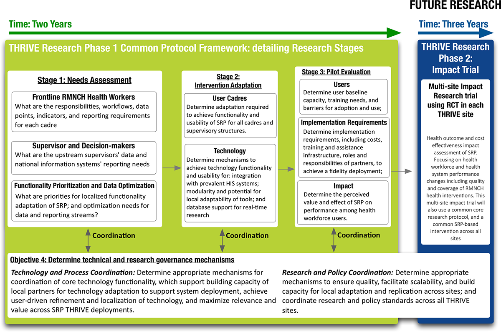

Led by WHO HRP, the THRIVE Consortium members have launched a 5-year, multi-site research study that aims to adapt, implement at scale, and rigorously assess the impact of OpenSRP and related technologies on health system performance, Reproductive, Maternal, Newborn, and Child Health (RMNCH) health outcomes and health information systems in multiple countries. The first phase of the study includes formative and field assessment research to adapt the OpenSRP platform to each of three local country settings, followed by a pilot evaluation among the relevant health worker cadres at each site to determine the factors necessary for high fidelity implementation, perceived value, worker performance and health system effect from the OpenSRP platform.
This multi-site research study focuses on determining how mHealth strategies delivered through the OpenSRP platform can improve frontline workforce efficiencies, data quality, and timeliness of validated RMNCH health intervention delivery, while estimating the per-unit cost of various interventions and effect on specific health outcomes.
